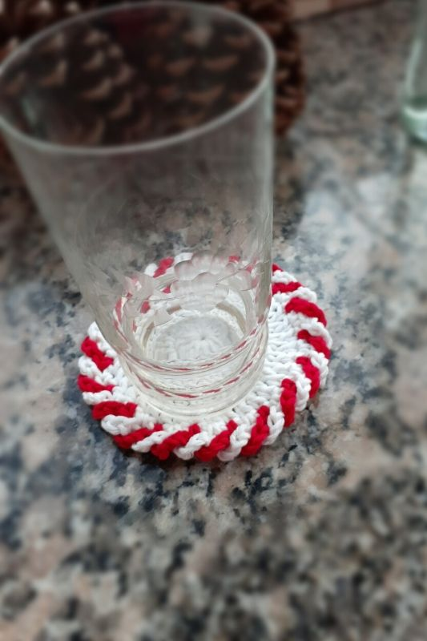

Materiales
Hilo de Algodon 8/8 color: Blanco y Rojo.
Aguja n°3 de Crochet
Aguja para coser lana
Tijera
Abreviaturas
p.: punto
p.enano: punto deslizado o razo.
Pb: punto bajo.
Pm: punto medio.
V: vareta.
1. Aro Mágico con 12 varetas
2. 12 Aumentos (24 v)
3. Cada 1v, 1Aum (36v)
4. Subir 4 cadenas, dejar un punto sin tejer(2°p) y pinchar en el 3° con 1pb, levantar 4 cadenas, dejar en suspenso.
Traer para adelante las primeras 4 cadenas y en el 2°p agregar hilo color rojo, levantar 4 cadenas y en el 4°p pinchar con 1pb pasando por delante de la 4cadenas suspendidas de color blanco.
Repetir en todo el circulo.
Cerrar y esconder hilos